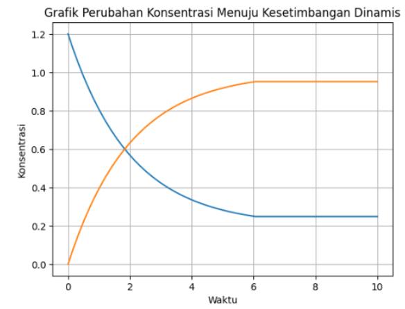
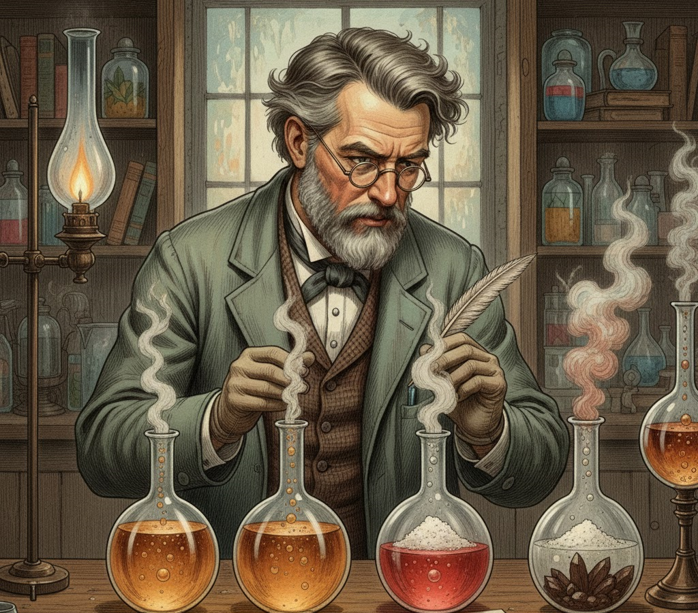

MENALAR
Setelah mengamati fenomena reaksi dua arah dan merumuskan pertanyaan, pemahaman tentang kesetimbangan kimia dapat diperdalam melalui analisis grafik perubahan konsentrasi terhadap waktu.
Perhatikan grafik berikut:

Pada grafik tersebut terlihat bahwa pada awal reaksi, konsentrasi pereaksi masih tinggi sehingga reaksi berlangsung ke arah pembentukan produk. Seiring berjalannya waktu, jumlah pereaksi berkurang karena digunakan untuk membentuk produk, sementara konsentrasi produk meningkat.
Namun, setelah waktu tertentu, perubahan konsentrasi tidak lagi terlihat. Garis pada grafik menjadi mendatar, menandakan bahwa jumlah pereaksi dan produk tetap. Keadaan ini menunjukkan bahwa sistem telah mencapai kesetimbangan.
Meskipun grafik tampak stabil, reaksi sebenarnya tidak berhenti. Pada tingkat partikel, reaksi maju dan reaksi balik tetap berlangsung secara bersamaan dengan laju yang sama. Inilah yang disebut kesetimbangan dinamis, yaitu keadaan ketika perubahan tetap terjadi tetapi tidak menyebabkan perubahan jumlah zat secara keseluruhan.
Melalui grafik tersebut, dapat dipahami bahwa kesetimbangan kimia bukanlah keadaan diam, melainkan keadaan seimbang antara dua proses yang berlangsung terus-menerus.
Selain memahami sifat dinamisnya, kita juga dapat mengelompokkan kesetimbangan berdasarkan wujud zat yang terlibat. Perhatikan dua contoh berikut:
N₂(g) + 3H₂(g) ⇌ 2NH₃(g)
Semua zat berwujud gas. Ini disebut kesetimbangan homogen.
CaCO₃(s) ⇌ CaO(s) + CO₂(g)
Melibatkan zat padat dan gas. Ini disebut kesetimbangan heterogen.
Dengan menghubungkan contoh tersebut, kita dapat memahami bahwa jenis kesetimbangan ditentukan oleh fase zat yang terlibat dalam reaksi.
Melalui kedua contoh tersebut, dapat dipahami bahwa kesetimbangan kimia tidak hanya dibedakan berdasarkan arah reaksinya, tetapi juga berdasarkan fase atau wujud zat yang terlibat. Jika semua zat berada dalam fase yang sama, maka kesetimbangan tersebut termasuk homogen. Sebaliknya, jika melibatkan lebih dari satu fase, seperti padat dan gas, maka termasuk kesetimbangan heterogen. Pemahaman ini penting karena dalam pembahasan selanjutnya, jenis fase akan memengaruhi cara kita menuliskan persamaan dan menganalisis sistem kesetimbangan.
Bayangkan seorang ilmuwan abad ke-19 sedang mengamati sebuah reaksi kimia di laboratorium. Ia melihat bahwa beberapa reaksi tampak berjalan hingga selesai, sementara reaksi lain terlihat “berhenti” meskipun sebenarnya masih berlangsung. Rasa penasaran pun muncul: mengapa perilaku sistem kesetimbangan bisa berbeda?

Dalam percobaannya, ilmuwan tersebut menemukan sesuatu yang menarik. Pada sebagian reaksi, semua zat berada dalam fase yang sama misalnya seluruhnya gas atau seluruhnya larutan. Namun pada reaksi lain, terdapat lebih dari satu fase, seperti campuran padat dan gas. Perbedaan ini membuat cara sistem mencapai kesetimbangan tidak selalu sama.
Melalui pengamatan berulang, ilmuwan mulai menyusun pola:
✨ Sistem dengan satu fase menunjukkan distribusi zat yang relatif seragam.
⚗️ Sistem dengan lebih dari satu fase memiliki batas antar fase yang memengaruhi interaksi partikel dan laju reaksi.
⚖️Pada reaksi yang melibatkan zat padat, jumlah zat padat tidak mengubah nilai tetapan kesetimbangan karena konsentrasinya dianggap konstan.
Dari proses berpikir inilah lahir pengelompokan yang kini kita kenal sebagai:
👉 Kesetimbangan homogen, ketika semua zat berada dalam fase yang sama.
👉 Kesetimbangan heterogen, ketika lebih dari satu fase terlibat dalam sistem.
Menariknya, ilmuwan tidak dapat melihat langsung proses pada tingkat partikel. Mereka hanya melihat sistem yang tampak stabil secara makroskopis. Untuk memahami apa yang sebenarnya terjadi, mereka melakukan inferensi yang menarik kesimpulan berdasarkan bukti eksperimen dan menggunakan model untuk menjelaskan fenomena mikroskopis.
Perjalanan ini menunjukkan bahwa konsep kesetimbangan bukan sekadar definisi dalam buku teks, melainkan hasil dari rasa ingin tahu, pengamatan, penalaran, serta upaya ilmuwan mengelompokkan fenomena berdasarkan pola data.
Pendekatan tersebut mencerminkan hakikat sains bahwa:
🔎 Pengetahuan ilmiah lahir dari pengamatan dan eksperimen.
🧩 Konsep terbentuk melalui proses klasifikasi dan analisis pola.
📊 Model digunakan untuk menjelaskan hal yang tidak dapat diamati langsung.
🔄 Pemahaman ilmiah bersifat tentatif dan dapat berkembang seiring bukti baru.
Dengan demikian, ketika kamu menalar tentang kesetimbangan homogen dan heterogen, kamu sebenarnya sedang mengikuti jejak ilmuwan menghubungkan hasil pengamatan, menarik kesimpulan, dan membangun pemahaman konseptual tentang fenomena kesetimbangan kimia.